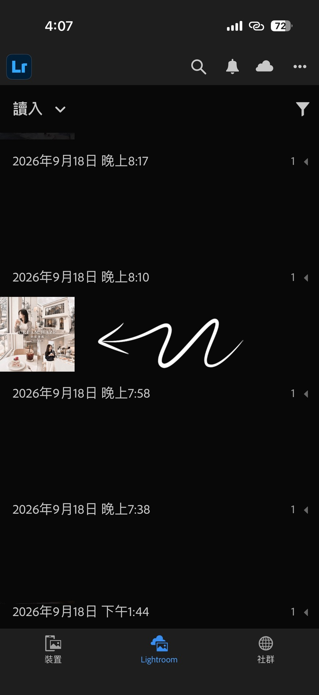
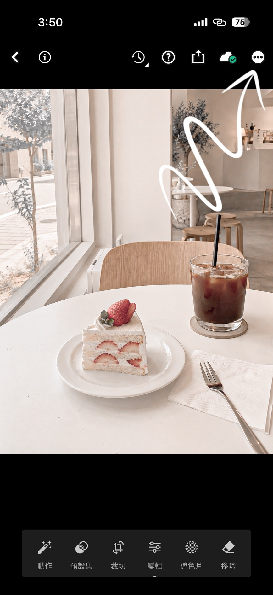
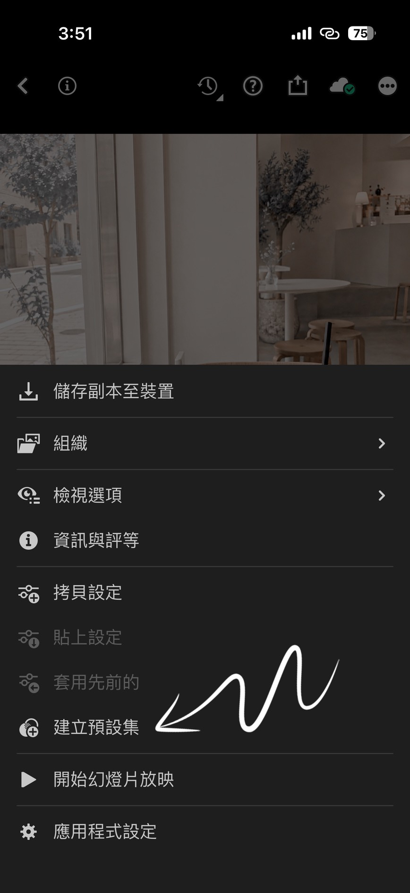
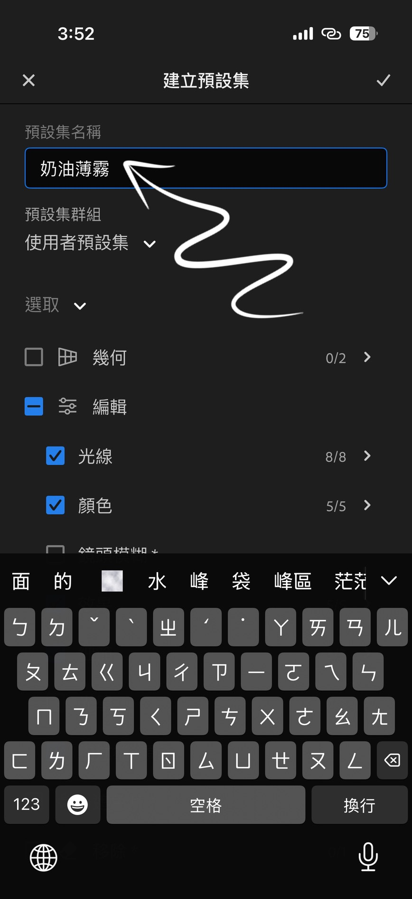
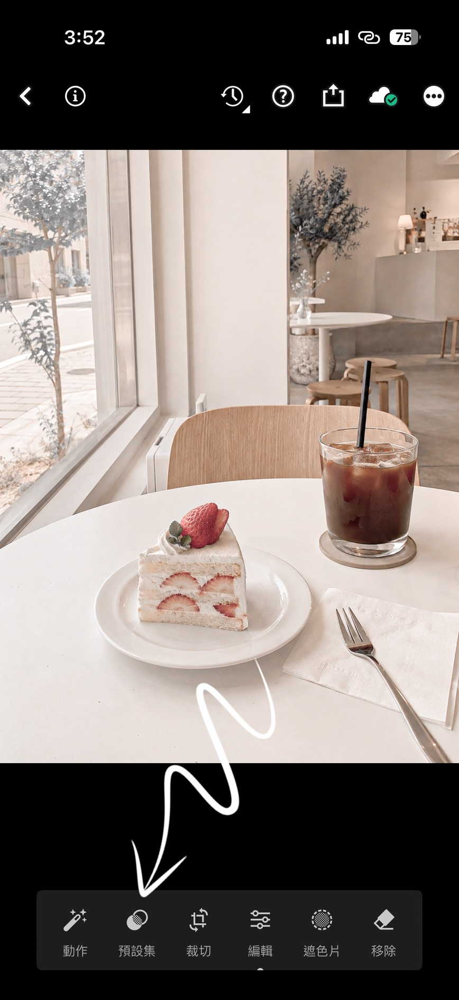
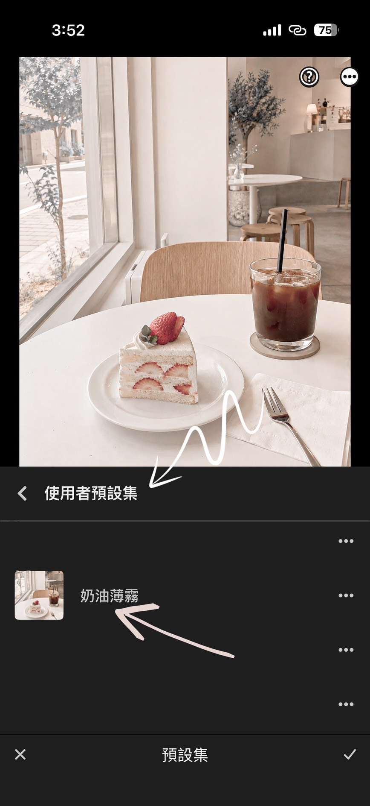

01放入教學照片
STEP 01
下載濾鏡檔案
從收到的下載連結，將 MEIER 濾鏡檔案保存到手機。
MEIER FILTER GUIDE
預 設 集 安 裝 教 學
IMPORT TO LIGHTROOM
從收到的下載連結，將 MEIER 濾鏡檔案保存到手機。
進入 Lightroom App，點擊新增照片或匯入按鈕。
找到手機的「檔案」或「下載項目」，選取剛才保存的檔案。
等待檔案加入 Lightroom，完成後點擊照片開啟。
開啟右上角選單，點擊「複製編輯設定」。
開啟想調色的照片，在選單中點擊「貼上編輯設定」。
依照照片光線微調曝光與色溫，就完成專屬於你的 MEIER 色調。
CREATE A PRESET

在 Lightroom 中開啟下載完成的濾鏡示範照片。

點擊畫面右上角的選單圖示，開啟更多編輯選項。

點擊畫面的選單圖示，開啟建立預設集選項。

點擊畫面的選單圖示，輸入預設集名稱。

點擊畫面的選單圖示，選擇要套用的預設集。

點擊畫面中加入的DNG圖示，開啟套用選項。
請截圖目前的操作畫面並傳送給我們，我們會協助你完成安裝。
CONTACT MEIER